class: center,middle # Self-Compressing Vision Tower for Efficient Dense Prediction Tasks ##### Thesis Defence [Github](https://github.com/adishourya/SelfcompressingDepthWiseAttn) [Experiments](https://www.comet.com/adishourya/convolution-compressing/view/new/panels) <figure style="text-align: center;"> <img src="./scratchpad/presentation/Maastricht_University_logo.svg" width="400"> </figure> > Aditya Shourya (i6353515) --- class: center # .rtext[.huerotate[Problem]] ### State of the art vision models dont fit on most devices. #### .gtext[Significance]: Most Devices then trade .ortext[throughput] or .ortext[accuracy]. #### .btext[Example]: Cannot trade either on applications like wildlife/sports photography <figure style="text-align: center;"> <img src="./scratchpad/presentation/autofocus.jpg" width="400"> <figcaption>.grtext[Fig0: Autofocusing needs to be quick and highly accurate. Edge Devices have sizeable parallel accelerator but they end up developing their own AI system.]</figcaption> </figure> --- class: center,top # Agenda .left[ 1. Related Work 2. Research Question 3. Method & Experiments 4. Results 5. Discussion ] --- class: split-slide .lco[ # Related Works #### .gtext[Non Compressing Methods] 1. Works on Choosing the most throughput efficient Compute Module : Efficient Net 2. Works on Structured Pruning of Deeper Layers : LayerDrop #### .btext[Compressing Methods] 3. Works on Accurate Backpropogation on Quantized Modules: DiffQ 4. Structured Pruning and Compression penalizing Weight Size : Self Compressing Convolutions ] --- class: center,middle ## .gtext[Non Compressing Methods] --- class: center,top ## .gtext[Efficient VIT] <figure style="text-align: center;"> <img src="./scratchpad/presentation/efficientvit1.png" width="600"> <figcaption>.grtext[Fig1. Local Module]</figcaption> </figure> <figure style="text-align: center;"> <img src="./scratchpad/presentation/efficientvit2.png" width="600"> <figcaption>.grtext[Fig2. Efficient VIT Transformer Block]</figcaption> </figure> .left[ - Current State of the art Vision Model for high throughput and high accuracy model. - It delegates local context to inverterted bottleneck composition of convolution functions. - And Global Context to Linear Attention. - .gtext[Proven effective across model sizes and dense prediction tasks → adopting most of its design principles] - .rtext[ Trained in BF16 (AMP) , No explicit effort to minimize model size] ] --- class: center,top ### .gtext[LayerDrop] <figure style="text-align: center;"> <img src="./scratchpad/presentation/LayerDrop.png" width="800"> <figcaption>.grtext[Fig3. LayerDrop]</figcaption> </figure> .left[ - Like `nn.Dropout` but on entire layers. - Each layer is tied to a learnable probability of skipping. - The probability term is trained alongside the weights of the model. - .gtext[Extract Sub-Graphs given compute capability.] - .rtext[Mostly on Benificial For very Deep Layers] ] --- class: center,middle ## .btext[Self-Compressing Methods] --- class: center,top ### .btext[DiffQ] <figure style="text-align: center;"> <img src="./scratchpad/presentation/diffq.png" width="800"> <figcaption>.grtext[Fig4. Quantization in DiffQ]</figcaption> </figure> .left[ - Provides Complete End to End Differentiable Quantized Training Method. - Introduces Noise after activation which has the standard error uniform over the interval of a single quantization bin, matching the distribution of a standard error of round-to-nearest operation. - .gtext[Noise is supposed to counter the effects of standard Straight through Estimators] - .rtext[Paper Discusses sizable overhead to manage noise for each group of weights] - .rtext[No Pruning Capabilities limits min bit-depth to 1] ] --- class: center,top ### .btext[Self Compressing Convolutions] <figure style="text-align: center;"> <img src="./scratchpad/presentation/selfCompressingConvolution.png" width="400"> <figcaption>.grtext[Fig5. An overview of the number of weight channels in the example classification network before (top) and after (bottom) applying Self-Compression.]</figcaption> </figure> .left[ - Works on limitations of DiffQ and make bit-depth as trainable parameter like layerdrop. - allows unified compression and pruning technique. - Still use STE instead of learnable noise. - .rtext[Study only performs this on convolution modules] - .gtext[The idea can be extended beyond convolutions to compress attention, transposed convolutions, and linear projections.] ] --- class: center,middle ## .ptext[.huerotate[Hypothesis]] Need for uniform allocation of model precision and compute cost across vision model depth. --- class: center,top ## .btext[.huerotate[Research Questions]] .left[ 1. Can we develop a unified, self-compressing vision architecture that prunes and compresses model components based on their computational cost, rather than applying a uniform approach? 2. Does this selective compression strategy maintain or improve model performance on dense prediction tasks, such as fine-grained classification, semantic segmentation, and optical flow, compared to state-of-the-art non-compressed models? 3. How do the storage requirements and inference throughput of our self-compressing model compare to existing models like EfficientViT and DiffQ on a given hardware target? 4. Can the compression process itself serve as a tool for inspecting the relative importance of different modules across model layers, thereby enabling better architectural design? ] --- class: center,middle ## Method .left[ 1. .gtext[Quantization Approach] 2. .btext[Objective Function] 3. .ptext[Architecture] ] --- class: split-slide .lc[ # .gtext[Quantization Function] - Differntiable bit depth (b) and exp bit (e) inside the quantization function. ```py def quantize_weight(x,b=3.5,e=-3.5): x_scaled = x/torch.exp2(e) half = torch.exp2(b-1) x_clipped = torch.clip(x_scaled,-1*half,half-1) x_round = torch.round(x_clipped) x_scaled_back = torch.exp2(e) * x_round return x_scaled_back ``` .grtext[This `q()` looks very similar to any other Q8A. For an example int4 which is `clip(x/s, -2^2, 2^2 -1)`] ] .rc0[ <video height="660" width="590" controls> <source src="./scratchpad/presentation/mid-term/QuantizationAnimation.mp4" type="video/mp4"> </video> ] --- class: split-slide .lc[ # .gtext[Quantization Function] - instead of using pseudo-quantization noise like in DiffQ which is expensive we use STE estimators. - the derivative of a rounding function is either 0 or not-defined. - Since `b` and `e` are inside the rounding function we need STE Rounding. - With STE estimator we can now perform quantization aware training. - There exists smaller level sets of bit depth for every precision given tolerance as a function of precision. ] .rcb[ ```py class STERound(torch.autograd.Function): """ same gradient as parent node. Also called as pass through gradient. or Straight Through Estimator. """ @staticmethod def forward(ctx,x): return torch.round(x) @staticmethod def backward(ctx,upstream): """ local jacobian is 1. """ return upstream ``` ] --- class: split-slide .lc[ # .gtext[Quantization Function] - If During Training: - Bit depth increases: counters effect of clipping. - Abs(Exp) bit increases: counters effect of rounding. - if a weight or a group of weight reach a bit depth of 0. - The tensors are pruned for next time step. ] .rc0[ <video height="660" width="590" controls> <source src="./scratchpad/presentation/mid-term/toSparse.mp4" type="video/mp4"> </video> ] --- class:center,middle ## .btext[Objective Function] .left[ 1. Penalizing Factor 2. Loss Function ] --- class:center,top ## .btext[Penalizing Factor] .left[ - Self Compressing Conv Study penalizes the shape of the matrices. - we diverge from the study and penalize the cost of the operation. - this cost is designed to be almost trivially proportional to the step complexity of the operation in a parallel accelerator. - For an example both vec-vec addition and a vec reduction is a O(n) operation in cpu program. - But in a parallel accelerator vec-vec addition has higher throughput. ] --- class:center,top <video width="1200" ,height:"1080", controls> <source src="./scratchpad/presentation/VectorOpsComparison.mp4" type="video/mp4"> </video> --- clas:center ## .btext[Penalizing Factor] .left[ - so we have added penalty if the compute module performs reduction over shared block memory. - and we will penalize modes of tensors that increases the latency of scheduling. ] <figure style="text-align: center;"> <p>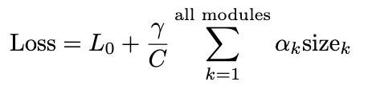</p> <figcaption>.grtext[Eq1. Objective Function]</figcaption> </figure> .left[ .grtext[ - where: - `L0` is cross entropy. - `C` is normalizing const for total size of all layers - `gamma` is the compression ratio - `size_k` is the penalty of the compute module (k) ]] --- class: center,top ## .ptext[Architecture] <figure style="text-align: center;"> <p>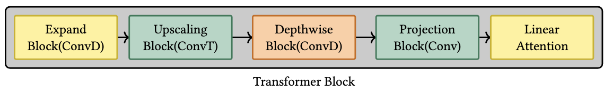</p> <figcaption>.grtext[Fig6. Transformer Block: local module -> context module]</figcaption> </figure> <figure style="text-align: center;"> <p>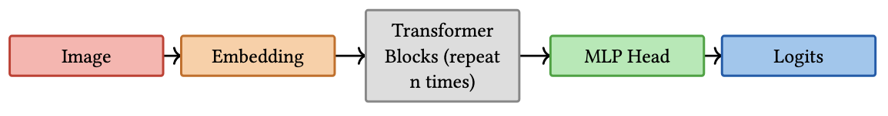</p> <figcaption>.grtext[Fig7. Architecture]</figcaption> </figure> .left[ - Like Efficient VIT our architecture has composition of convolution for local Module - And linear attention for context/global module. - Local Module is expected to capture local inductive biases and Context Module to find relations between distant pixels. - Return Logits as needed depending on the dense prediction task. ] --- class: center,top ## Local and Global Module <figure style="text-align: center;"> <figcaption>.grtext[Fig6. Transformer Block: local module -> context module]</figcaption> </figure> .left[ #### .gtext[Local Module] - Follows Inverted Bottleneck structure [MobileNet V2] - That is the expand and the projection stage use smaller kernels (3x3) while everything in the middle uses larger.(5x5) ] .left[ .grtext[ - where: - ConvT : Transposed Convolution for upscaling features - ConvD : Depthwise Convolution for cheap convolution on upscaled features ]] .left[ #### .btext[Global Module] - Single Linear Attention in a transformer block ] --- class: center,middle ## Convolution Heuristics .left[ - Tying Bit-Depths and - .rtext[Irreversible Forgetting] ] --- <video width="1200" ,height:"1080", controls> <source src="./scratchpad/presentation/mid-term/compressKernels.mp4" type="video/mp4"> </video> --- class: center,top ### Penalizing Convolution .left[ - Convolution is a highly parallelizable operation. - Convolution can be parallelized by launching multiple windows independently as needed. Each window’s computation and async-copy and write can be completed entirely within a single shared memory block, resulting in a parallel depth complexity of O(1). - Scheduling increases with spatial resolution (H,W) and input features (I) - This cost also happens to be equal to the storage cost of the kernels. ] <figure style="text-align: center;"> <p>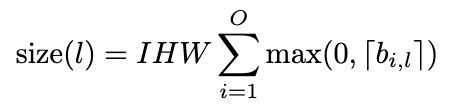</p> <figcaption>.grtext[Eq2: Layer Size Convolution]</figcaption> </figure> .left[ - .grtext[Suppose H,W,I,O stands for spatial resolution (height and width) and the input and the output feature maps] - .grtext[Then a convolutional kernel of shape (O, I, k, k) performs O(I · H · W · k^2) operations (MACs).] ] --- class: center,top ## DepthWise Convolution .left[ <!-- - A Depthwise or grouped convolution kernel does less work than an ungrouped convolution kernel. --> <!-- - Then a kernel of shape (O, I, k, k) performs O(I/G · H · W · k^2) operations (MACs). --> <!-- - .grtext[where G is number of groups. I=G is a special grouped convolution which is also called depthwise convolution kernels.] --> - since a depthwise convolution kernel weight is independent of input features we use it for expand features so that it is independent of embedding dimension and after tranposed convolution as depthwise convolution has higher throughput with increased resolution (see Fig6). ] <figure style="display: flex; flex-direction: column; align-items: center;"> <div style="display: flex; gap: 10px;"> <p>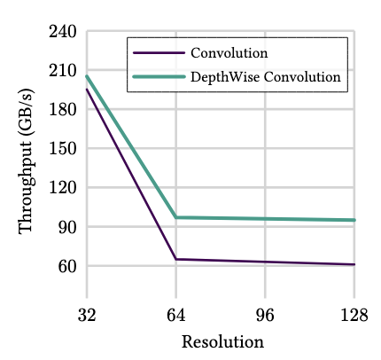</p> <p>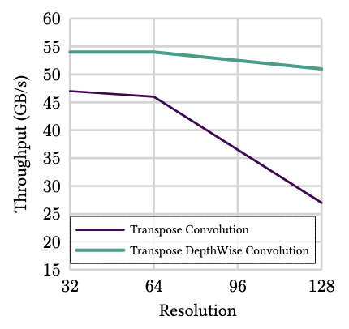</p> </div> <figcaption>Fig8. Depthwise Convolution has higher throughput|Higher is better</figcaption> </figure> --- class: center,middle ## Linear Attention .left[ 1. Throughput comparision of linear and softmax attention 2. Favourable Tradeoff of linear attention ] --- class: center,top ## Softmax Attention <figure style="display: flex; flex-direction: column; align-items: center;"> <div style="display: flex; gap: 10px;"> <p>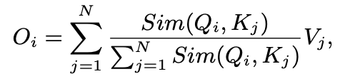</p> <p>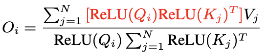</p> <p>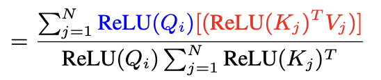</p> </div> <figcaption>Eq3: Attention Calculation</figcaption> </figure> .left[ - Full softmax attention captures both local and global features - But is More Expensive than some other compute modules that calculate global features. - we expect that local features have already been captured by local modules (conv) ] <figure style="text-align: center;"> <p>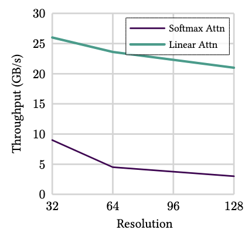</p> <figcaption>.grtext[Fig9 Full Softmax Attention is Expensive| Higher is better]</figcaption> </figure> --- class: center,top ## Linear Attention <figure style="display: flex; flex-direction: column; align-items: center;"> <div style="display: flex; gap: 10px;"> </div> <figcaption>Eq3:Attention Calculation</figcaption> </figure> .left[ #### Improvements from the choice of Similarity Function - Full Softmax Attention uses softmax to calculate attention score. - But Online Softmax is linear in Sequence Length. And requires accumulation across shared memory blocks to safely calculate `exp^(logit -logit.max)`. - Instead of normalized score , researchers use an approximation with a cheaper O(1) activation like `relu` ] --- class: center,top ## Linear Attention <figure style="display: flex; flex-direction: column; align-items: center;"> <div style="display: flex; gap: 10px;"> </div> <figcaption>Eq3: Attention Calculation</figcaption> </figure> .left[ - ##### Improvements from Associativity - Q,K,V : R:N -> d - so `Q@K.T` makes it Quadratic on Spatial Resolution. - alternative is to perform `K.T @ V` which makes it quadratic on head dimension. - since head dimension is significantly smaller than spatial resolution we see sizeable improvement in throughput. ] --- class: center,top ## Penalizing Linear Attention <figure style="display: flex; flex-direction: column; align-items: center;"> <div style="display: flex; gap: 10px;"> </div> <figcaption>Eq3: Linear Attention</figcaption> </figure> <figure style="display: flex; flex-direction: column; align-items: center;"> <div style="display: flex; gap: 10px;"> <p>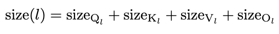</p> </div> <figcaption>Eq4: Sum of all Weights of a head</figcaption> </figure> <figure style="display: flex; flex-direction: column; align-items: center;"> <div style="display: flex; gap: 10px;"> <p>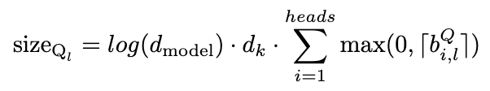</p> </div> <figcaption>Eq5: Attention Penalty </figcaption> </figure> .left[ - we tie bit-depth to each attention head. - Each Tiled MMA can be done as binary-tree reduction which makes it logarithmic in depth in parallel accelerators. ] --- class: center,middle ## Ablation Studies <figure style="display: flex; flex-direction: column; align-items: center;"> <div style="display: flex; gap: 10px;"> </div> <figcaption>Fig7: Architecture </figcaption> </figure> .left[ 1. Pixel Shuffling vs Transposed Convolution 2. Pointwise vs 3x3 Convolution kernels 3. Sequential vs Parallel execution of Context Module with Local Module ] --- class: center,middle ## Pixel Shuffling vs Transposed Convolution .grtext[We observed no pruning of expansion convolution which have higher output feature maps] --- class:center,top <video width="1200" ,height:"1080", controls> <source src="./scratchpad/presentation/PixelShuffling.mp4" type="video/mp4"> </video> --- class:center,top <video width="1200" ,height:"1080", controls> <source src="./scratchpad/presentation/ShufflingProblem.mp4" type="video/mp4"> </video> --- class: center, middle ### Pointwise Convolution .left[ - Quantized 1×1 kernels (≤4-bit) showed unstable initialization: feature collapse. - we saw no significant degradation in throughput when comparing quantized 3x3 vs un-quantized 1x1 kernels. ] --- class: split-slide .lc0[ ### Parallel Execution of linear attention - Increase in latency during Scheduling at inference time. - we also observed poor gpu occupancy in parallel execution compared to sequential. <figure style="display: flex; flex-direction: column; align-items: center;"> <div style="display: flex; gap: 10px;"> </div> <figcaption>Fig8. Depthwise Convolution has higher throughput|Higher is better</figcaption> </figure> ] .rc2[ <div class="mermaid"> graph TD I[Img] --> A[Embed] --> B(•) B --> C[Linear Attn] C --> L(•) B --> E[Convolutions] E --> L L -- repeat n times --> Z[Logits] </div> Linear Attention in parallel branch ] --- class: center,middle ## Experiments .left[ 1. Setup 2. Implementation 3. Datasets 4. Results ] --- class: center, top ### Setup(Target Device and Throughput Measurement) .left[ - we use NVIDIA 4070 as our inference device and for profiling throughput of modules. - Throughput measured at FP32 for a fixed batch size. - we also make efforts in incorporating fused kernels for both training and inference time. - Inference time :For Compute-bound kernels (linear attention) we modify an off the shelf implementation to encorporate our quantization approach. - Training Time: For memory bounded kernels (top-k and cross-entropy) we use off-the shelf implementation as distributed. ] --- class:center,top ### Setup(Implementation) .left[ - Implemented in PyTorch and Cutlass-dsl. - Optimization: AdamW (β₁=0.9, β₂=0.999, ϵ=1e−8, weight decay=0.01). - Learning rate: cosine decay from 1e−3 to 1e−5; compression coefficient γ ramps from 0.1 → 0.2 on separate schedule. - Initialized parameters to simulate 4-bit precision for stable quantization-aware training. - Trained up to 1000 epochs with early stopping (patience=50, min. delta=0.01). ] --- class:center,top ### Dataset(CUB200) : Classification <figure style="text-align: center;"> <p>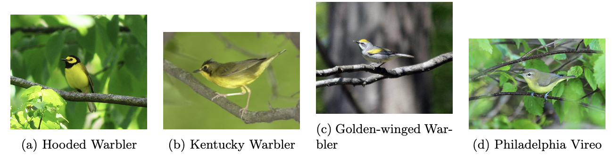</p> <figcaption>.grtext[Fig10: Dataset: **CUB-200-2011** with 200 bird species. ]</figcaption> </figure> .left[ - Total: 11,788 images (\~6k train, \~5.8k test). - Average resolution: \~500×500 pixels. - Requires detecting subtle visual differences between species.(heavy local inductive biases) ] --- class:center,top ### Dataset(Country211) : Classification <figure style="text-align: center;"> <p>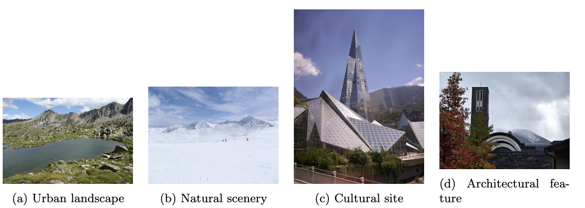</p> <figcaption>.grtext[Fig11 Images From the Same Country Class 0]</figcaption> </figure> .left[ - Dataset: **Country211** from the YFCC100M corpus. - \~63,000 images; 150 train, 50 validation, 100 test per country. - Covers **211 countries**; sourced from Wikimedia Commons and other Creative Commons repositories. - High variation in resolution, composition, and quality; tests recognition of global context and long-term memory capability of our architecture. ] --- class:center,top ### Dataset(ade20k): Segmentation <figure style="text-align: center;"> <p>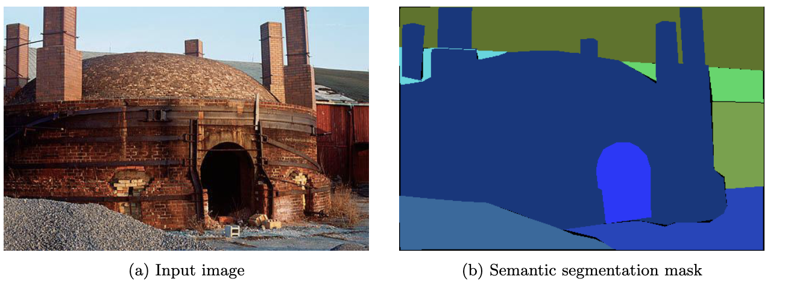</p> <figcaption>.grtext[Fig12: ADE20K Dataset Input Image and Ground Truth Seg Mask]</figcaption> </figure> .left[ * Dataset: **ADE20K** with \~20k training and \~2k validation images. * Dense pixel-level annotations across **150 semantic categories**. * All images downscaled to match classification benchmark resolution for consistency. * Tests model’s dense prediction and structured output performance in complex scenes. ] --- class:center,top ### Dataset(hd1k): Optical Flow Problem <figure style="text-align: center;"> <p>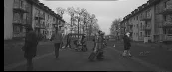</p> <figcaption>.grtext[Fig13: Driving DataFrames from HD1k]</figcaption> </figure> .left[ - Dataset: **HD1K** with 1,066 high-definition (1920×1080) video frames. - Includes dense ground truth flow fields from real-world driving scenarios. - Challenges: large displacements, motion blur, occlusions, and complex lighting. - Frames resized to 448×448 for consistency, testing robustness under domain shift and resolution change. ] --- class:center,middle ### Processing Datasets .left[ - All datasets are publicly available. - Used standard train/validation/test splits without modifications or filtering. - Minimal preprocessing applied. - Images normalized using dataset-specific statistics. - All images resized to 448×448 pixels with bilinear interpolation for consistency. ] --- class:center,top ### Evaluation Metrics .left[ .btext[Task Specific] - **Classification Accuracy**: Top-1 (highest-confidence match) and Top-5 (ground truth in top 5 predictions); relevant for fine-grained classification. - **Segmentation Quality (mIoU)**: Mean IoU across classes; balances boundary accuracy and correct categorization. - **Optical Flow Accuracy (EPE)**: Average Euclidean distance between predicted and ground truth flow vectors; lower is better. ] .left[ .ptext[Throughput Specific] - **Theoretical Complexity (FLOPS)**: GFLOPS for a single forward pass; architecture-independent measure of computational demand. - **Practical Throughput (Images/sec)**: Measured on NVIDIA RTX 4070 Mobile; includes all data loading and processing overhead for realistic deployment performance. ] --- class:center,top ### Evaluation on CUB200 <figure style="text-align: center;"> <p>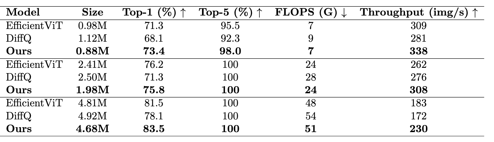</p> <figcaption>.grtext[Table1: CUB200 Results]</figcaption> </figure> .left[ - We match or improve Top-1 and Top-5 accuracy across all model sizes against Efficient VIT. - Smallest and Largest model (0.88M, 4.68M parameters) achieves highest accuracy and significant improvement in throughput. - Larger models match EfficientViT accuracy while improving computational efficiency. - Demonstrates parameter-efficient, high-throughput performance on .ortext[local-inductive heavy] classification. ] --- class:center,top ### Evaluation on Country211 <figure style="text-align: center;"> <p>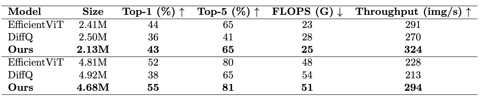</p> <figcaption>.grtext[Table2: Country211 Results]</figcaption> </figure> .left[ - we match accuracy and improve throughput (for both sizes) compared to efficient vit. - Score remains poor across all the baselines. ] --- class:center,top ### Evaluation on ADE20k <figure style="text-align: center;"> <p>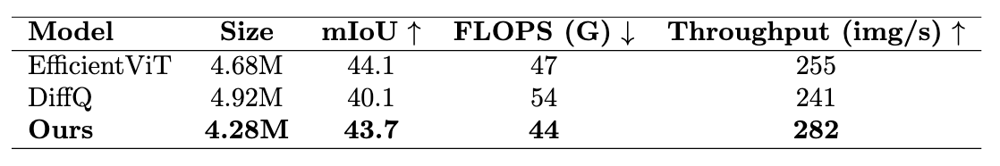</p> <figcaption>.grtext[Table3: ADE20K Results]</figcaption> </figure> .left[ - Maintains competitive mIoU (43.7 vs 44.1 EfficientViT) under compression. - Achieves highest throughput (282 images/sec), improving inference speed. ] --- class:center,top ### Evaluation on HD1k <figure style="text-align: center;"> <p>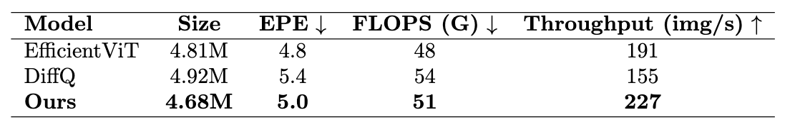</p> <figcaption>.grtext[Table4: HD1k Results]</figcaption> </figure> .left[ - slightly poor EPE than Efficient VIT (5.0 vs 4.8) - But we still improve upon throughput. ] --- class:center,top ### Pruning Trends (CUB200 1.98M Model) <figure style="text-align: center;"> <p>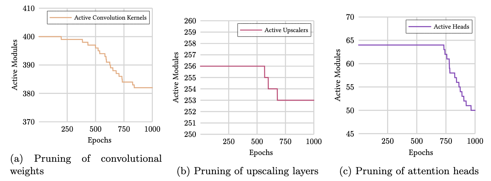</p> <figcaption>.grtext[Fig14: Module Pruning]</figcaption> </figure> .left[ - Convolutional Kernels: gradual pruning after ~300 epochs, accelerating 500–750 epochs; ~4.5% reduction. - Transposed Convolutions (Upscaling): minimal pruning, 1.2% reduction; critical for reconstruction. - Attention Heads: stable until ~750 epochs, then sharp drop; ~21.9% reduction, most aggressive pruning. - Overall: attention and convolutional layers pruned substantially, upscalers minimally; preserves spatial resolution. ] --- class:center,top ### Compression Trends (CUB200 1.98M Model) <figure style="text-align: center;"> <p>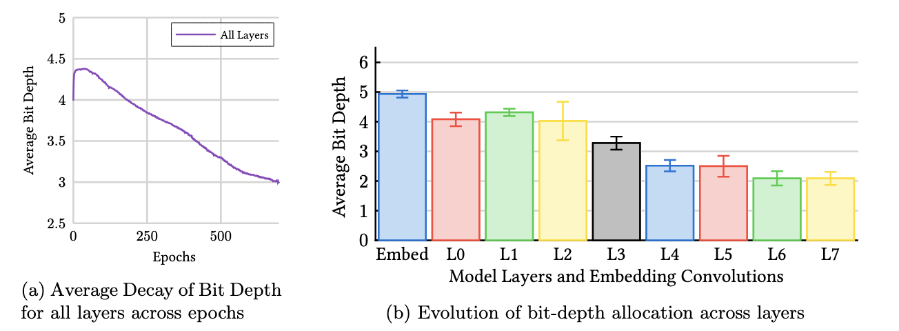</p> <figcaption>.grtext[Fig15: Model Compression]</figcaption> </figure> .left[ - Average Bit-Depth: starts ~4.3 bits, gradually decays to ~3.0 bits; smooth adaptation over training. - Heterogeneous Allocation: embedding layer retains highest precision (~5 bits), deeper layers lower (~2 bits), mid-layers moderate (~3–4 bits). - Early layers and embeddings sensitive to precision; deeper layers tolerate aggressive quantization. - Network converges to mixed-precision: high precision in feature extraction, aggressive compression in deeper processing layers. ] --- class:center,middle #### Question 1. Can we develop a unified, self-compressing vision architecture that prunes and compresses model components based on their computational cost, rather than applying a uniform approach? .gtext[Yes, We mostly match accuracy against current state of the art and the compute modules both compress and prune by using depthwise complexity as the penalizing factor.] --- class:center,middle #### Question 2. Does this selective compression strategy maintain or improve model performance on dense prediction tasks, such as fine-grained classification, semantic segmentation, and optical flow, compared to state-of-the-art non-compressed models? .gtext[Other than Optical Flow Problem, We either match or improve upon the evaluation metric.] --- class:center,middle #### Question 3. How do the storage requirements and inference throughput of our self-compressing model compare to existing models like EfficientViT and DiffQ on a given hardware target? .gtext[Yes,The Models were intialized at roughly the same shape but with pruning and compression we save on model checkpoint size.] --- class:center,middle #### Question 4. Can the compression process itself serve as a tool for inspecting the relative importance of different modules across model layers, thereby enabling better architectural design? <figure style="text-align: center;"> <figcaption>.grtext[Fig15: Model Compression]</figcaption> </figure> .gtext[Yes, Deeper Layers require less precision but still produces accurate results.] --- class:center,middle ### Limitations .left[ - **Latency Optimization**: Observe no improvement in throughput during training , as we compile the graph only once (to combat against irreversible forgetting) - **No Large Model**: scaling study across Small, Base, Large models needed. - **Task Generality**: Validated on three tasks only; extending to object detection, video understanding, and more could prove broader applicability. ] --- class:center,middle ### Future Studies .left[ - Develop training framework with just-in-time graph recompilation to optimize evolving sparse architectures during training. - Investigate scalability across multiple model sizes (Small, Base, Large) to validate generalizability. - Co-design compression algorithms with a better target hardware for real-world deployment efficiency. - Extend the study to broader vision tasks: object detection, instance segmentation, video analysis. ] --- class:center,middle ### Conclusion .left[ - Developed a self-compressing vision tower that prunes and quantizes convolutions, transposed convolutions, and linear attention based on computational cost. - Achieves competitive accuracy with EfficientViT on classification, segmentation, and optical flow benchmarks. - Reduces storage and FLOPs while surpassing DiffQ in accuracy and throughput. - Cost-aware compression provides insights into module importance across layers. - Facilitates efficient, interpretable, and hardware-aware model design. ] --- class:center,middle # .btext[.huerotate[`<End_of_Slides>`]] --- class:center,top ### Refernces .left[ [1] A. Canziani, A. Paszke, and E. Culurciello, “An analysis of deep neural network models for practical applications,” 2016, arXiv preprint arXiv:1605.07678. [2] A. Palmas and P. Andronico, “Deep learning computer vision algorithms for real-time uavs on-board camera image processing,” arXiv preprint arXiv:2211.01037, 2022. [3] W. Zhang, J. Li, and Y. Wang, “Real-time image processing in iot devices with a lightweight yolo approach,” in Proceedings of the International Conference on Computer Vision and Pattern Recognition, 2025, pp. 1234–1242. [4] H. Cai, J. Li, M. Hu, C. Gan, and S. Han, “Efficientvit: Multi-scale linear attention for high- resolution dense prediction,” 2024. [Online]. Available: https://arxiv.org/abs/2205.14756 [5] L. Beyer, A. Steiner, A. S. Pinto, A. Kolesnikov, X. Wang, D. Salz, M. Neumann, I. Alabdulmohsin, M. Tschannen, E. Bugliarello, T. Unterthiner, D. Keysers, S. Koppula, F. Liu, A. Grycner, A. Gritsenko, N. Houlsby, M. Kumar, K. Rong, J. Eisenschlos, R. Kabra, M. Bauer, M. Boˇsnjak, X. Chen, M. Minderer, P. Voigtlaender, I. Bica, I. Balazevic, J. Puigcerver, P. Papalampidi, O. Henaff, X. Xiong, R. Soricut, J. Harmsen, and X. Zhai, “Paligemma: A versatile 3b vlm for transfer,” 2024. [Online]. Available: https://arxiv.org/abs/2407.07726 [6] T. Dao, “Hybrid linear-softmax attention working very well at large scale and long-context! as we’ve seen with multiple models now . . . ,” https://x.com/ tri dao/status/1879439184462762225, Jul. 2025, tweet. [Online]. Available: https: //x.com/tri dao/status/1879439184462762225 [7] A. Gromov, K. Tirumala, H. Shapourian, P. Glorioso, and D. A. Roberts, “The unreasonable ineffectiveness of the deeper layers,” 2025. [Online]. Available: https://arxiv.org/abs/2403.17887 [8] MiniMax, A. Li, B. Gong, B. Yang, B. Shan, C. Liu, C. Zhu, C. Zhang, C. Guo, D. Chen, D. Li, E. Jiao, G. Li, G. Zhang, H. Sun, H. Dong, J. Zhu, J. Zhuang, J. Song, J. Zhu, J. Han, J. Li, J. Xie, J. Xu, J. Yan, K. Zhang, K. Xiao, K. Kang, L. Han, L. Wang, L. Yu, L. Feng, L. Zheng, L. Chai, L. Xing, M. Ju, M. Chi, M. Zhang, P. Huang, P. Niu, P. Li, P. Zhao, Q. Yang, Q. Xu, Q. Wang, Q. Wang, Q. Li, R. Leng, S. Shi, S. Yu, S. Li, S. Zhu, T. Huang, T. Liang, W. Sun, W. Sun, W. Cheng, W. Li, X. Song, X. Su, X. Han, X. Zhang, X. Hou, X. Min, X. Zou, X. Shen, Y. Gong, Y. Zhu, Y. Zhou, Y. Zhong, Y. Hu, Y. Fan, Y. Yu, Y. Yang, Y. Li, Y. Huang, Y. Li, Y. Huang, Y. Xu, Y. Mao, Z. Li, Z. Li, Z. Tao, Z. Ying, Z. Cong, Z. Qin, Z. Fan, Z. Yu, Z. Jiang, and Z. Wu, “Minimax-01: Scaling foundation models with lightning attention,” 2025. [Online]. Available: https://arxiv.org/abs/2501.08313 27 [9] A. Dosovitskiy, L. Beyer, A. Kolesnikov, D. Weissenborn, X. Zhai, T. Unterthiner, M. Dehghani, M. Minderer, G. Heigold, S. Gelly, J. Uszkoreit, and N. Houlsby, “An image is worth 16x16 words: Transformers for image recognition at scale,” 2021. [Online]. Available: https://arxiv.org/abs/2010.11929 [10] S. Mehta and M. Rastegari, “Mobilevit: Light-weight, general-purpose, and mobile-friendly vision transformer,” 2022. [Online]. Available: https://arxiv.org/abs/2110.02178 [11] K. Wu, J. Zhang, H. Peng, M. Liu, B. Xiao, J. Fu, and L. Yuan, “Tinyvit: Fast pretrain- ing distillation for small vision transformers,” in European conference on computer vision (ECCV), 2022. [12] A. Katharopoulos, A. Vyas, N. Pappas, and F. Fleuret, “Transformers are rnns: Fast autoregressive transformers with linear attention,” 2020. [Online]. Available: https://arxiv.org/abs/2006.16236 [13] M. Sandler, A. Howard, M. Zhu, A. Zhmoginov, and L.-C. Chen, “Mobilenetv2: Inverted residuals and linear bottlenecks,” 2019. [Online]. Available: https://arxiv.org/abs/1801. 04381 [14] A. Fan, E. Grave, and A. Joulin, “Reducing transformer depth on demand with structured dropout,” 2019. [Online]. Available: https://arxiv.org/abs/1909.11556 [15] A. D´efossez, Y. Adi, and G. Synnaeve, “Differentiable model compression via pseudo quantization noise,” 2022. [Online]. Available: https://arxiv.org/abs/2104.09987 [16] S. Cs´efalvay and J. Imber, “Self-compressing neural networks,” 2023. [Online]. Available: https://arxiv.org/abs/2301.13142 [17] NVIDIA Corporation, “Nvidia geforce rtx 4070 laptop gpu,” https://www.nvidia.com/ en-us/geforce/graphics-cards/40-series/rtx-4070-laptop/, 2023, accessed: 2025-08-18. [18] M. D. Zeiler and R. Fergus, “Visualizing and understanding convolutional networks,” 2013. [Online]. Available: https://arxiv.org/abs/1311.2901 [19] “Attention is logarithmic, actually,” 2025. [Online]. Available: https://supaiku.com/ attention-is-logarithmic [20] P. Micikevicius, D. Stosic, N. Burgess, M. Cornea, P. Dubey, R. Grisenthwaite, S. Ha, A. Heinecke, P. Judd, J. Kamalu, N. Mellempudi, S. Oberman, M. Shoeybi, M. Siu, and H. Wu, “Fp8 formats for deep learning,” 2022. [Online]. Available: https://arxiv.org/abs/2209.05433 [21] Y. Bengio, N. L´eonard, and A. Courville, “Estimating or propagating gradients through stochastic neurons for conditional computation,” 2013. [Online]. Available: https://arxiv.org/abs/1308.3432 [22] A. Vaswani, N. Shazeer, N. Parmar, J. Uszkoreit, L. Jones, A. N. Gomez, L. Kaiser, and I. Polosukhin, “Attention is all you need,” 2023. [Online]. Available: https://arxiv.org/abs/1706.03762 [23] A. Shocher, B. Feinstein, N. Haim, and M. Irani, “From discrete to continuous convolution layers,” 2020. [Online]. Available: https://arxiv.org/abs/2006.11120 28 [24] K. He, X. Zhang, S. Ren, and J. Sun, “Deep residual learning for image recognition,” in Proceedings of the IEEE Conference on Computer Vision and Pattern Recognition (CVPR), 2016, pp. 770–778. [25] O. Ronneberger, P. Fischer, and T. Brox, “U-net: Convolutional networks for biomedical image segmentation,” in Medical Image Computing and Computer-Assisted Intervention (MICCAI). Springer, 2015, pp. 234–241. [26] Y. Xu, C. Li, D. Li, X. Sheng, F. Jiang, L. Tian, and E. Barsoum, “Qt-vit: improving linear attention in vit with quadratic taylor expansion,” in Proceedings of the 38th International Conference on Neural Information Processing Systems, ser. NIPS ’24. Red Hook, NY, USA: Curran Associates Inc., 2025. [27] M. Beck, K. P¨oppel, P. Lippe, and S. Hochreiter, “Tiled flash linear attention: More efficient linear rnn and xlstm kernels,” 2025. [Online]. Available: https://arxiv.org/abs/2503.14376 [28] NVIDIA Corporation, “Nvidia h100 tensor core gpu,” https://www.nvidia.com/en-us/ data-center/h100/, 2022, accessed: 2025-08-18. [29] S. Yang and Y. Zhang, “Fla: A triton-based library for hardware-efficient implementations of linear attention mechanism,” Jan. 2024. [Online]. Available: https://github.com/fla-org/ flash-linear-attention [30] Dao-AILab, “QuACK: A quirky assortment of cute kernels,” https://github.com/ Dao-AILab/quack, 2025, open-source CUDA kernel collection written in Python using CuTe-DSL. Apache-2.0 license. Accessed: 2025-08-18. [31] A. Paszke, S. Gross, F. Massa, A. Lerer, J. Bradbury, G. Chanan, T. Killeen, Z. Lin, N. Gimelshein, L. Antiga, A. Desmaison, A. Kopf, E. Yang, Z. DeVito, M. Raison, A. Tejani, S. Chilamkurthy, B. Steiner, L. Fang, J. Bai, and S. Chintala, “Pytorch: An imperative style, high-performance deep learning library,” in Advances in Neural Information Processing Systems 32 (NeurIPS 2019), 2019. [32] N. Corporation, “Cute: Cuda tensor expressions,” https://docs.nvidia.com/cutlass/media/ docs/cpp/cute/index.html, 2025, accessed: 2025-08-18. [33] J. Jiang, J. Zhu, M. Chong, S. Agarwal, C.-H. Hsiao, Y. Wang, C. Diao, T. Wu, and A. Singh, “Triton: An intermediate language and compiler for optimizing deep learning on gpus,” in Advances in Neural Information Processing Systems (NeurIPS) 35, 2022. [Online]. Available: https://openreview.net/forum?id=7phvJ2kvEY [34] I. Loshchilov and F. Hutter, “Decoupled weight decay regularization,” in International Conference on Learning Representations (ICLR), 2019. [Online]. Available: https: //openreview.net/forum?id=Bkg6RiCqY7 [35] C. Wah, S. Branson, P. Welinder, P. Perona, and S. Belongie, “Cub-200-2011,” Apr 2022. [36] A. Radford, J. W. Kim, T. Xu, G. Brockman, C. McLeavey, and I. Sutskever, “Coun- try211 dataset,” https://openaipublic.azureedge.net/clip/data/country211.tgz, 2021, subset of YFCC100M filtered by GPS coordinates mapped to ISO-3166 country codes. Released as part of the CLIP dataset resources. Use subject to underlying Creative Commons licenses. [37] B. Thomee, D. A. Shamma, G. Friedland, B. Elizalde, K. Ni, D. Poland, D. Borth, and L.-J. Li, “Yfcc100m: The new data in multimedia research,” in Proceedings of the 2016 ACM Conference on Multimedia Retrieval (ICMR). ACM, 2016, pp. 283–288. 29 [38] Wikimedia Commons contributors, “Wikimedia commons, the free media repository,” 2025, accessed: 2025-08-17. [Online]. Available: https://commons.wikimedia.org/ [39] B. Zhou, H. Zhao, X. Puig, S. Fidler, A. Barriuso, and A. Torralba, “Scene parsing through ade20k dataset,” in Proceedings of the IEEE Conference on Computer Vision and Pattern Recognition (CVPR), 2017, pp. 5122–5130. [40] D. Kondermann, R. Nair, K. Honauer, A. Kuhn, T. Sch¨ops, J. Schmidt, S. Nowozin, A. Geiger, C. Rother, and C. Kondermann, “The hci benchmark suite: Stereo and flow ground truth with uncertainties for urban autonomous driving,” in Proceedings of the IEEE Conference on Computer Vision and Pattern Recognition Workshops (CVPRW), 2016, pp. 19–28. [41] W. Shi, J. Caballero, F. Husz´ar, J. Totz, A. P. Aitken, R. Bishop, D. Rueckert, and Z. Wang, “Real-time single image and video super-resolution using an efficient sub-pixel convolutional neural network,” 2016. [Online]. Available: https://arxiv.org/abs/1609.05158 [42] M. Everingham, L. Van Gool, C. K. Williams, J. Winn, and A. Zisserman, “The pascal visual object classes (voc) challenge,” International Journal of Computer Vision, vol. 88, no. 2, pp. 303–338, 2010. [43] S. Baker, D. Scharstein, J. Lewis, S. Roth, M. J. Black, and R. Szeliski, “A database and evaluation methodology for optical flow,” in International Conference on Computer Vision (ICCV), 2011, pp. 233–236. [44] V. Sovrasov. (2018-2024) ptflops: a flops counting tool for neural networks in pytorch framework. [Online]. Available: https://github.com/sovrasov/flops-counter.pytorch ] <!-- slide stuff -->